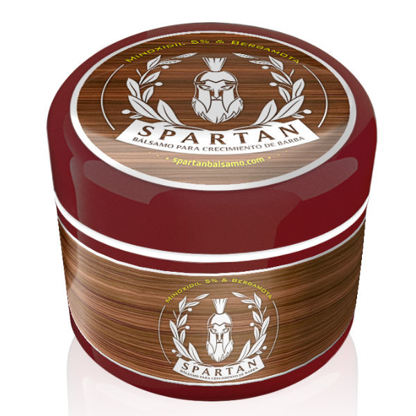

Propuesta comercial · 2026
Preparada por Carlos Calderón · Director Creativo + Builder · @SoyCarlosCalderon
Versión 3 · Mayo 2026

Diagnóstico previo — lo que encontré
Esta propuesta responde específicamente a cada uno de estos puntos. No es un catálogo de servicios — es una secuencia de decisiones ordenadas por impacto.
Capa 1 — Fundación
Punto de entrada. Funciona de forma independiente.
Dirección creativa completa, producción y estrategia de plataforma. No piezas sueltas — un sistema editorial con hilo conductor mensual que construye identidad y comunidad de forma acumulativa.
Serie educativa — 9 piezas en 3 meses
El ingrediente activo de Spartan es polémico y mal entendido. Hay competidores vendiendo 20% como si fuera mejor. Esta serie posiciona a Spartan como la voz autorizada del tema en español — y diferencia la marca con educación, no solo con claims.
| # | Mes | Formato | Plataforma | Tema |
|---|---|---|---|---|
| 01 | Mes 1 | Carrusel · 8 slides | Por qué el 5% es el estándar — no el 20% | |
| 02 | Mes 1 | Reel · 45–60 seg | TikTokIG | "Te están vendiendo más, no mejor" — gancho directo al competidor |
| 03 | Mes 1 | Carrusel · 6 slides | Cómo actúa el Minoxidil en el folículo — explicación visual | |
| 04 | Mes 2 | Reel · 30 seg | TikTok | Mito vs. realidad — qué esperar en las primeras 8 semanas |
| 05 | Mes 2 | Carrusel · 8 slides | Bálsamo vs. líquido — la diferencia real de aplicación y absorción | |
| 06 | Mes 2 | Reel · 45 seg | TikTokIG | Qué hacen la Biotina y la Bergamota — más allá del Minoxidil |
| 07 | Mes 3 | Story sequence · 6 slides | El proceso mes a mes — timeline visual de resultados reales | |
| 08 | Mes 3 | Reel · 45 seg | TikTokIG | Las 5 preguntas más comunes respondidas — con vocero a cuadro |
| 09 | Mes 3 | Reel · 60 seg | TikTokIGYouTube | Comparativa real: Spartan vs. genérico — sin nombrar, sin atacar |
Capa 2 — Amplificación
Se puede activar con o sin el retainer. Recomendado a partir del mes 2.
En lugar de activaciones de un solo golpe, construimos un arco narrativo de 3 meses por perfil: Mes 1: Introducción/Problema · Mes 2: Rutina y Uso · Mes 3: Resultados Reales. Integración natural, maximizando confianza y conversión a mediano plazo. Todos los perfiles con métricas de engagement verificadas y fit real con la identidad Spartan.
Tracking extendido por embajador — Shopify + UTM + reportes mensuales
spartanbalsamo.com/?utm_source=instagram&utm_medium=reel&utm_campaign=spartan-q3&utm_content=malcriado&ref=SPARTAN-MALCRIADO
spartanbalsamo.com/?utm_source=instagram&utm_medium=reel&utm_campaign=spartan-q3&utm_content=fredyregio&ref=SPARTAN-REGIO
Con 90 días de tracking veremos qué mes y qué ángulo de contenido genera más conversiones, optimizando el presupuesto a futuro.
Si la marca decide escalar la campaña con un perfil ancla de alcance masivo, @malcriado.x representa el mejor fit por identidad y comunidad. Su activación cambia la economía de la campaña y requiere una decisión presupuestal separada.
Capa 3 — IP Propia
Propuesta de largo plazo. Independiente de las capas anteriores.
Spartan ya intentó una rap session simulada. El instinto era correcto: su audiencia vive en la cultura urbana. La diferencia es producción real, artista real y un formato que con el tiempo le pertenece a la marca. Una Live Session patrocinada no es un ad — es un evento cultural que la gente comparte porque vale compartirse.
Resumen de inversión
Cada capa es una decisión independiente. Pueden aprobarse en secuencia sin necesidad de comprometer el paquete completo desde el inicio.